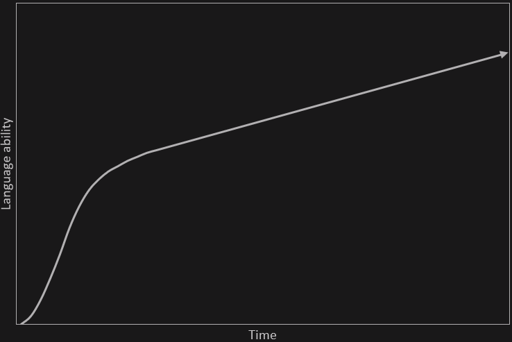

Hướng dẫn tự học ngoại ngữ¶
Trước khi bắt đầu học ngoại ngữ¶
Trước khi bắt đầu vào đọc lộ trình học ngoại ngữ, có thể bạn sẽ muốn làm một bài khởi động để bắt đầu làm quen dần với phương pháp học tập được định hướng trong trang.
Nhiều người học ngoại ngữ "thất bại" do đâu?¶
Hiện nay có rất nhiều người đã bắt đầu học các ngoại ngữ khác nhau vì những mục tiêu khác nhau. Dù vậy, không ít người sau nhiều năm học vẫn không thể đạt được mục tiêu ấy. Do việc học ngoại ngữ quá khó? Hay do chưa đủ chăm?
Việc học ngoại ngữ cần rất nhiều thời gian, công sức và sự cam kết. Vậy nên, bạn cần phải có một mục tiêu rõ ràng trước khi bắt đầu.
Trong các hướng dẫn học ngoại ngữ khác (mà mình đã đọc), họ đề cập rất nhiều về vấn đề "Thiết lập mục tiêu học ngoại ngữ". Thứ bạn thật sự cần thiết lập là hệ thống học ngoại ngữ, bao gồm những thứ như thói quen học tập hàng ngày và phương pháp học tập.
Phương pháp học tạo ra sự khác biệt rất lớn trong khả năng và tốc độ tiến bộ ngoại ngữ của bạn. Khó có thể đạt được những mục tiêu như vậy chỉ với các phương pháp học ngoại ngữ "truyền thống". Nhiều người "thất bại" vì thiếu vào một phần quan trọng, Immersion, trong quá trình học tập. Immersion để chỉ việc nghe hoặc đọc nội dung của người bản ngữ dành cho người bản ngữ.
Ví dụ:
- Xem Youtube Tiếng Anh mà không sử dụng phụ đề Tiếng Việt được tính là immerse trong Tiếng Anh.
- Xem Anime mà không sử dụng phụ đề được tính là immerse trong Tiếng Nhật.
Để tìm hiểu thêm về xây dựng hệ thống học tập, bạn có thể đọc cuốn Atomic Habit hoặc bắt đầu đọc cuốn Không mục tiêu, một hệ thống do mình viết.
Vấn đề với phương pháp truyền thống¶
Học ngoại ngữ theo phương pháp "truyền thống" thì nó thường sẽ kiểu như này:
- Học bảng chữ cái (nếu cần)
- Học các câu cơ bản như câu chào hỏi, tự giới thiệu.
- Học cấu trúc ngữ pháp và từ vựng cơ bản.
- Nghĩ ra câu bằng cách trò chuyện với giáo viên hoặc bạn học hoặc bằng cách viết.
- Dịch các câu ví dụ từ Tiếng Việt sang ngôn ngữ đích (TL - Target Language) và ngược lại.
- Tra cứu thêm tài liệu về cấu trúc ngữ pháp và từ vựng trong sách giáo khoa hoặc xem video YouTube
- Thực hành hội thoại sử dụng kiến thức đã học.
- Tích lũy thêm nhiều cấu trúc từ vựng và ngữ pháp và lấy số lượng làm thước đo cho sự tiến bộ của bản thân
- Giai đoạn cuối: Cố nói và viết để rèn luyện khả năng ngoại ngữ
Bản thân việc học như này hoàn toàn được, nhưng chưa đủ để giúp bạn đạt được trình độ cao. Vấn đề là những người học thuộc nhóm trên không tương tác với ngôn ngữ thực tế.
Người mới học thường mắc một lỗi là cố gắng học tài liệu cho đến khi hiểu hết thì thôi và không thực hiện Immersion vì chưa cảm thấy thoải mái, "sẵn sàng".
Tuy nhiên, cần ngừng sử dụng tài liệu cho người mới học càng sớm càng tốt vì trên thực tế, bạn sẽ không bao giờ cảm thấy sẵn sàng nếu không bắt đầu tiếp xúc với ngôn ngữ thực tế và làm quen với nó.
Chủ nghĩa cầu toàn có thể là con dao hai lưỡi trong việc học ngôn ngữ. Tốn quá nhiều thời gian và công sức mà không đạt được nhiều kết quả, cố ghi nhớ từng chi tiết nhỏ nhất của những thứ không thực sự quan trọng trong cả quá trình học dài đấy.
Để thành thạo một ngôn ngữ¶
Để học 1 ngoại ngữ, phải thu thập thật nhiều đầu vào (INPUT), nói cách khác là phải nghe và đọc thật nhiều nội dung như tin tức, phim, video, sách, truyện tranh.. bằng ngôn ngữ đó. (Trích từ Học ngoại ngữ bằng cách xem phim? - Immersion learning).
Để thành thạo một ngôn ngữ ở cấp độ cao cần một số lượng thời gian lớn để đọc và nghe nội dung ngôn ngữ mục tiêu và từ đó hình thành lên trải nghiệm ngôn ngữ. Nếu không có những trải nghiệm cần thiết, việc cố gắng tự tạo câu ở ngôn ngữ mục tiêu thường khiến cho cách diễn đạt trở lên thiếu tự nhiên hoặc khó hiểu. Thêm nữa, việc không hiểu hoặc chưa hiểu rõ cách người bản ngữ sử dụng ngôn ngữ của họ khiến việc hiểu họ trở nên khó khăn hơn rất nhiều do không quen với cách diễn đạt bên ngoài phạm vi của tài liệu học tập.
Đây là lý do tại sao trong việc học ngoại ngữ cần có "Immersion" - đọc và nghe những gì người bản ngữ viết và nói.
Học ngôn ngữ là một quá trình ghi nhớ các thành phần trong vô thức thông qua Comprehensible Input. Điều này có nghĩa là, khi bạn hiểu điều gì đó (comprehensible) trong quá trình Immersion, bộ não của bạn sẽ vô thức lưu mẫu (pattern) đó vào để có thể sử dụng trong tương lai.
Tại sao lại không nói về "biết ngữ pháp" hay "nhớ từ vựng"? Bởi đây không phải là cách xử lý ngôn ngữ tự nhiên.
Chấp nhận cảm giác khó chịu và mù mờ¶
Trong việc học ngôn ngữ và trong bất cứ lĩnh vực nào đòi hỏi kỹ năng, bạn sẽ luôn gặp khó khăn trong một thời gian dài cho đến khi bạn tiến bộ hơn. Như đã nói ở trên, nhiều người học (mình cũng đã từng như vậy) cứ cố gắng học thật tốt một thứ gì đó trước khi sử dụng thực tế.
Một người học có thể gặp vấn đề khi cố học một cấu trúc ngữ pháp nào đó quá lâu và không chuyển sang những nội dung khác mà họ nên học.
↑ Đây là điều chúng ta cần tránh
Cần phải học cách chấp nhận sự mù mờ khi học một ngôn ngữ, biết buông bỏ và bắt tay vào làm những gì chúng ta thực sự cần làm. Điều này hoàn toàn khác so với cách học ở trường lớp, nơi được tuyên dương dựa trên thành tích học và được xếp loại thông qua các tiêu chí hoặc các kỳ thi.
Những người học ở trên dễ cảm thấy nản vì không hiểu được tất cả hoặc phần nhiều khi tương tác với ngôn ngữ thực tế, cho dù đó là một bộ phim truyền hình, hay một quyển sách hoặc thậm chí chỉ là một cuộc hội thoại bình thường với người bản ngữ. Việc tiếp tục như vậy khi bạn hiểu rất ít nghe có vẻ không hợp lí, nhưng như đã nói ở các phần trước, học một ngôn ngữ cũng giống như nhảy vào hố sâu bất tận vậy. Không dễ dàng gì để có thể hiểu hết quyển tiểu thuyết hay một bộ phim (dài tập) đó ngay lần đầu. Cần tới lần thứ ba, thứ tư, thứ năm và thậm chí thứ sáu để có thể học được điều gì đó.
Điều khiến việc học ngôn ngữ trở nên quá khác biệt so với các môn học ở trường là nó dựa trên việc sử dụng ngôn ngữ một cách tự nhiên và thực tế, thứ mà tài liệu học tập không thể truyền tải được. Vì vậy, cách duy nhất để làm quen với mọi thứ là chấp nhận sự mù mờ (low comprehension), vì càng tương tác với ngôn ngữ nhiều thì sẽ càng tiến bộ hơn.
Chúng ta không chỉ thực hiện Immersion mà không làm gì khác. Cũng cần học những thứ như ngữ pháp và từ vựng. Đồng thời, sử dụng từ điển để học từ trong quá trình Immersion.
Bạn tiến bộ như thế nào¶
Có thể bạn chưa biết: Bạn hoàn toàn có thể học được đến cấp độ trung cấp của một ngoại ngữ bất kì mà không gặp quá nhiều khó khăn. Lúc tiến bộ nhanh nhất sẽ là khoảng sau giai đoạn mới bắt đầu học một chút. Tuy nhiên, sau khi đạt đến trình độ trung cấp, tiến trình bắt đầu bị chậm lại. Nó sẽ trông như biểu đồ này:

Từ trình độ trung cấp lên cao cấp sẽ cần rất nhiều thời gian. Lúc đấy bạn sẽ cảm giác như mình đang không tiến bộ và phương pháp học tập của mình sai. Nhưng nếu bạn vẫn tiếp tục immerse ngoại ngữ và sử dụng Anki hàng ngày, thì khả năng ngoại ngữ của bạn vẫn đang cải thiện, chỉ là nó không nhanh như khi mới học thôi. Mình xin phép trích và dịch lại phần này trong trang FAQ của TheMoeWay
Hãy nhớ rằng bạn có thể hiểu khoảng 80% các nội dung mình thực hiện Immersion với khoảng 2000 từ. Bạn có thể hiểu là 90% với 10.000. Nó giống như đi dường dốc vậy, càng ngày càng trở nên dốc hơn. 20.000 bạn hiểu là 95%. 30.000 thì cuối cùng bạn cũng có thể đạt gần 100%. Cảm giác này khá tệ, nhưng bạn vẫn phải tiếp tục thôi.
Cần dành bao nhiêu thời gian¶
Để đạt được trình độ cao trong một ngoại ngữ bất kì cần rất nhiều thời gian.
Nguyên tắc cơ bản là: Dành càng nhiều thời gian cho ngoại ngữ càng tốt¶
Yếu tố cốt lõi quyết định tốc độ học ngoại ngữ của bạn là thời gian. Nếu bạn muốn giỏi nhanh hơn thì hãy đặt mục tiêu là dành nhiều thời gian nhất có thể để học. Càng nhiều càng tốt. Điều này còn quan trọng hơn nhiều việc có phương pháp học tập hay những nguồn tài nguyên tốt.
Để bắt đầu xây dựng thời gian cho việc học ngoại ngữ của cá nhân bạn, bạn cần phải học hàng ngày. Lý tưởng là dành ít nhất một tiếng mỗi ngày. Sẽ không có giới hạn thời gian, bạn càng dành nhiều thời gian, bạn càng trở nên giỏi nhanh hơn.
Trong lộ trình này, phần bạn sẽ dành nhiều thời gian nhất chính là việc tiêu thụ nội dung được làm ở ngôn ngữ mục tiêu của bạn, và nó cũng có thể là thứ mà bạn muốn làm nhất trong quá trình học ngoại ngữ bởi bạn sẽ là người chọn ra thứ mà bạn muốn xem/nghe/đọc.
Lộ trình tự học ngoại ngữ¶
- Học bảng chữ cái (Dựa trên ngôn ngữ bạn chọn)
- Cài đặt công cụ + Thiết lập môi trường học.
- Học từ vựng và ngữ pháp cơ bản.
- Tiêu thụ nội dung ngôn ngữ mục tiêu + Output.
- Thực hành Output nhiều hơn nữa và tập viết.
Mình sẽ để một Flowchart ở phần này để bạn có thể theo để học ngoại ngữ. Ở mỗi giai đoạn, mình sẽ giải thích tương đối về những nhiệm vụ mà bạn cần thực hiện (Tất nhiên, tùy vào từng ngôn ngữ sẽ lại nảy sinh ra thêm nhiệm vụ mới, ví dụ như học Tiếng Trung thì bạn sẽ cần học một số lượng lớn Hán Tự). Phần hướng dẫn này sẽ tương đối ngắn và chỉ bao gồm những phần chính trong quá trình học ngoại ngữ thông qua Immersion. Nếu bạn cảm thấy chưa đủ và muốn đọc thêm để hiểu hơn về phương pháp học ngoại ngữ, bạn có thể đọc thêm các bài viết trên trang.

Bắt học học bảng chữ cái¶
Với một số ngôn ngữ mà không sử dụng bảng chữ cái Latin như Tiếng Việt mình, bạn cần phải học bảng chữ cái đầu tiên trước khi học bất cứ thì khác, phải biết mặt các chữ cái và cách viết của nó. Không có ngôn ngữ nào diễn tả ngôn ngữ mục tiêu tốt hơn chính ngôn ngữ mục tiêu ấy (Không ngôn ngữ nào diễn tả Tiếng Anh tốt như Tiếng Anh chẳng hạn).
Cách bắt đầu thì đơn giản là làm thao tác tìm kiếm trên Google rồi cày, bạn cũng có thể tìm một bộ thẻ trên Quizlet bất kì hoặc thậm chí có thể tạo một bộ thẻ Anki riêng cho nó. Rồi nếu có thể thì tìm Game ôn tập bảng chữ cái xem sao.
Cài đặt công cụ¶
Phần hướng dẫn cài đặt sẽ được chuyển qua các bài hướng dẫn riêng cho từng phần. Về cơ bản, bạn sẽ cần có một ứng dụng hỗ trợ hệ thống lặp lại ngắt quãng (spaced-repetition system) là Anki và một số các ứng dụng từ điển trên máy tính bao gồm Yomitan (Tiện ích trình duyệt) và Goldendict (Ứng dụng xem từ điển trên máy tính). Bạn sẽ học (ôn tập) từ vựng trên Anki thông qua những bộ deck, là một bộ thẻ ghi nhớ (flashcards) giúp bạn đưa thông tin (từ vựng, ngữ pháp .v.v.) vào bộ nhớ dài hạn.
Bạn cần cài đặt những phần mềm sau (Bấm vào tên phần mềm để đọc hướng dẫn cách cài đặt):
- Anki - Một phần mềm giúp học và ghi nhớ từ vựng thông qua SRS và Active Recall. Bạn cần phải học cách sử dụng cơ bản trước khi bắt đầu dùng (Quan trọng, vì phần mềm này không dễ dùng).
- Yomitan - Tiện ích trình duyệt giúp tra từ trên trình duyệt cực xịn. Sử dụng được nhiều từ điển cùng một lúc và hỗ trợ nhiều ngôn ngữ. Bạn cần phải học cách cài đặt và tự tải từ điển để thêm vào trong tiện ích này. Chủ yếu hỗ trợ Tiếng Nhật nhưng có thể sử dụng cho các ngôn ngữ khác nếu có người làm từ điển cho Yomitan.
- Goldendict - Ứng dụng xem nhiều từ điển cùng một lúc.
- Xây dựng một môi trường học ngoại ngữ cho riêng mình ngay tại nhà
Tham khảo thêm:
Học từ vựng và ngữ pháp cơ bản¶
Bước đầu tiên sẽ giúp bạn chuẩn bị hành trang để bắt đầu tiêu thụ nội dung ngôn ngữ mục tiêu của bạn. Có một số người cho rằng nên bắt đầu thực hành Immersion từ ngày đầu tiên, nhưng cá nhân mình gợi ý bạn nên dành một vài tuần đầu học từ vựng và ngữ pháp cơ bản. Trước hết sẽ có một số hướng dẫn/gợi ý sau đây:
- Bạn không cần phải ghi nhớ hết toàn bộ tài liệu (resourcce) ngữ pháp mà bạn đang sử dụng để có thể bắt đầu immerse.
- Bạn không cần phải hoàn thành bộ thẻ từ vựng trong Anki để bắt đầu immerse, có thể bắt đầu immerse khi bạn cảm thấy bây giờ bạn có thể (Càng sớm càng tốt).
- Cách để hiểu ngữ pháp tốt nhất là có ngữ cảnh (bạn sẽ có được ngữ cảnh thông qua Immersion), và bạn vẫn nên học ngữ pháp trước khi bắt đầu Immersion
- Phần lớn các hướng dẫn ngữ pháp đều có những lỗi và vấn đề nhất định. Vì vậy, nếu bạn đọc trong một nguồn mà không thấy hiểu, thử chuyển qua các hướng dẫn ngữ pháp khác xem.
Vì đây là hướng dẫn chung cho việc học ngoại ngữ nên các hướng dẫn ngữ pháp và bộ thẻ gợi ý sẽ được mình chuyển qua bên trang Gợi ý tài nguyên học từ vựng và ngữ pháp
Tiêu thụ nội dung ngôn ngữ mục tiêu¶
Nếu bạn đã hoàn thành (hoặc gần xong) bộ thẻ từ vựng cơ bản ở ngôn ngữ mục tiêu đồng thời có một lượng hiểu ngữ pháp tương đối, chúc mừng bạn nha.
Có thể hiện tại bạn đang cảm thấy gần như không hiểu bất kì nội dung nào ở ngoại ngữ mục tiêu của mình. Điều này là hoàn toàn bình thường. Bạn vẫn chưa tiếp thụ được nhiều kiến thức về ngôn ngữ đấy nhưng bạn đã học được tương đối rồi đấy. Bây giờ là lúc bắt đầu hành trình thực sự. Bước này về cơ bản sẽ không bao giờ kết thúc vì càng tiêu thụ nội dung ngôn ngữ mục tiêu thì kĩ năng của bạn sẽ càng trở nên tốt hơn. Phần việc chính của phần này là bạn cần bắt đầu xây dựng một bộ mining deck (bộ thẻ mining). Một bộ thẻ mining là một bộ thẻ Anki bạn tự tạo mà khi thông qua các nội dung mà bạn tiêu thụ, bạn sẽ "đào" từ vựng từ câu mà bạn tiếp xúc trong lúc immerse. Việc tạo một bộ thẻ mining là một chủ đề lớn và sẽ được giải thích kĩ hơn ở bài viết Mining. Bạn nên bắt đầu nghe ngoại ngữ càng sớm càng tốt. Bạn có thể tìm gợi ý nội dung để tiêu thụ ở trong trang Tài nguyên thông qua các hướng dẫn của Refold hoặc các trang gợi ý riêng. Tìm nội dung bạn thích, bất kì thứ gì miễn là ở ngôn ngữ mục tiêu của bạn. Ban đầu, khả năng nghe của bạn sẽ kém hơn khả năng đọc rất nhiều. Và nếu có thể, thử đi tìm người bản ngữ để thực hành output (nói, viết) cùng. Sẽ thích hơn rất nhiều và cũng sẽ giúp cho bạn có động lực học.
Ở giai đoạn này, có thể bạn sẽ muốn học thêm ngữ pháp nâng cao. Tùy vào ngôn ngữ bạn học mà có thể tìm được các hướng dẫn ngôn ngữ nâng cao. Cách mà cá nhân mình (là tác giả gốc của bài viết - donkuri) học ngữ pháp là:
- Bắt gặp một mẫu ngữ pháp lạ trong lúc đọc.
- Tìm kiếm về mẫu ngữ pháp trên mạng.
- Ghi lại mẫu ngữ pháp đấy vào một danh sách riêng của bạn hoặc chỗ nào bạn muốn.
- Ôn tập thường xuyên
Nếu bạn không ngại đọc định nghĩa ở ngôn ngữ mục tiêu của mình (đơn ngữ) thì hãy thử tìm nó bằng chính ngôn ngữ bạn học và học mẫu ngữ pháp đấy thông qua định nghĩa đơn ngữ luôn.
Output nhiều hơn nữa¶
Một khi bạn có mức hiểu tương đối tốt về ngoại ngữ và có thể đọc một cách dễ dàng hơn, đã đến lúc tập speaking với người bản ngữ thường xuyên hơn rồi. Điều này cũng tương tự cho việc tập viết (Không nhất thiết phải viết trên giấy) và có người sửa sai cho bạn. Điều này không có nghĩa là bạn không thể output từ sớm. Nếu bạn có cơ hội output từ sớm, bắt đầu luôn cũng không vấn đề gì, nhưng nhớ là cần phải Immersion song song, bởi chỉ giỏi đọc là chưa đủ để giỏi viết, và điều này cũng tương tự với việc nói, chỉ giỏi nghe là chưa đủ để giỏi nói. Tuy chưa đủ nhưng chúng là điều kiện cần để bạn có thể giỏi Output, bản thân Output không phải là cách học ngoại ngữ mà Input mới chính là học ngoại ngữ. Về phần này bạn có thể đọc câu trả lời cho câu hỏi Is it bad if I make a mistake when speaking? và bài viết Nói Tiếng Anh
Tiếp theo là gì?¶
Làm bất kì điều gì bạn muốn. Thi chứng chỉ ngoại ngữ thử xem nếu bạn muốn, đó là một cột mốc đánh dấu nỗ lực của bản thân. Bạn có thể làm bất kì điều gì bạn muốn với ngôn ngữ mục tiêu.
Danh sách nhiệm vụ¶
Những thứ bạn cần làm:
- Học bảng chữ cái
- Hoàn thành bộ thẻ từ vựng cơ bản và một hướng dẫn ngữ pháp bất kì
- Cài đặt các công cụ cần thiết, xây dựng môi trường học ngoại ngữ.
- Tạo một bộ thẻ mining sau khi hoàn thành bộ thẻ từ vựng cơ bản
- Nạp thêm thật nhiều Input
- Thử Output với người bản ngữ của ngôn ngữ mục tiêu của bạn.
Nguồn¶
Hướng dẫn này được tổng hợp, dịch và hiệu đính lại từ:
- Main Guide được viết bởi Donkuri.
- languageguide
- Japanese Guide - TMW
- Japanese FAQ - TMW
- Before You Start